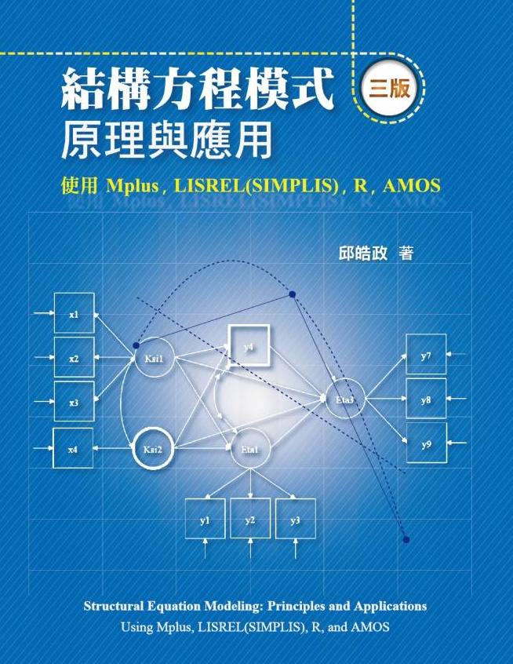
Books & prefaces
專書著作
Books, methods & the stories behind them
專書寫作是我教學工作的一部分。從統計與量化研究的基礎，到結構方程模式、多層次分析、潛在異質性與貝氏統計，我希望把模型背後的想法與分析步驟說清楚。各書的序言，也記錄了寫作緣起與對研究方法的思考。
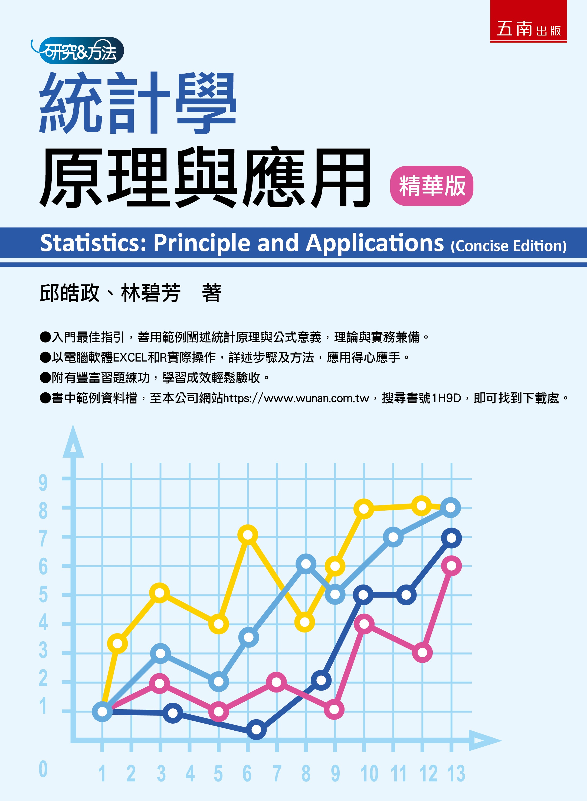
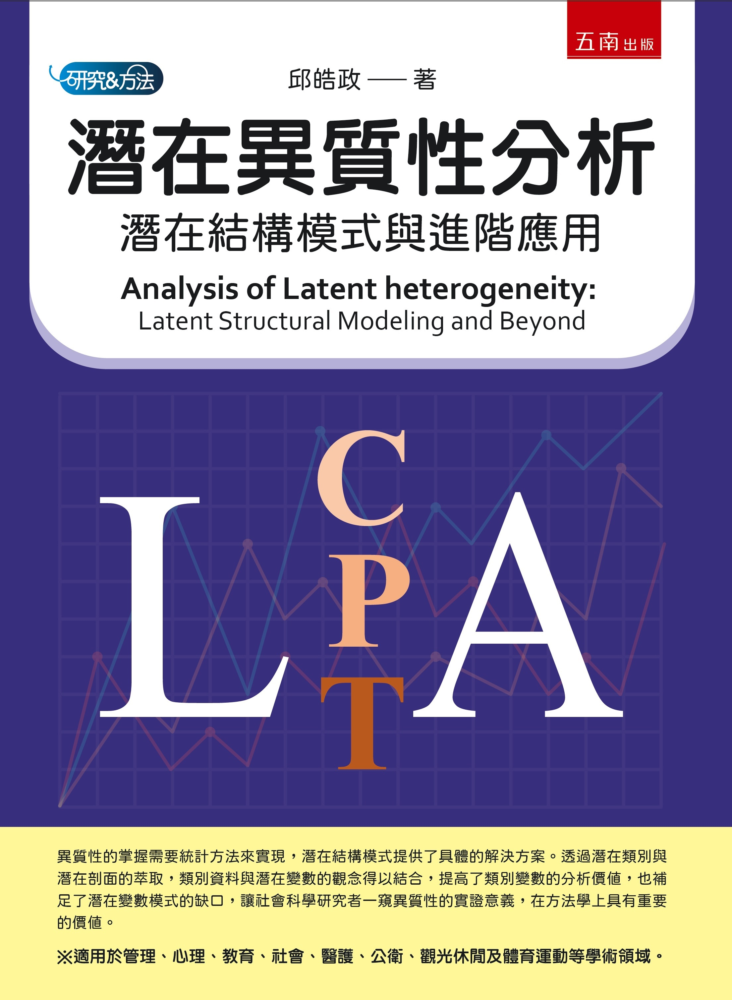
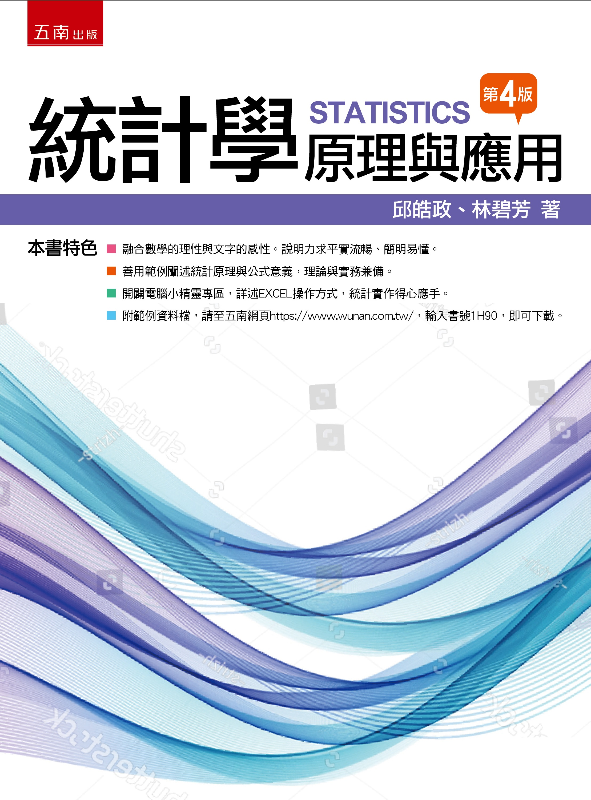
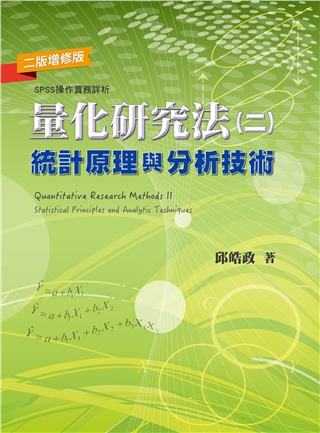
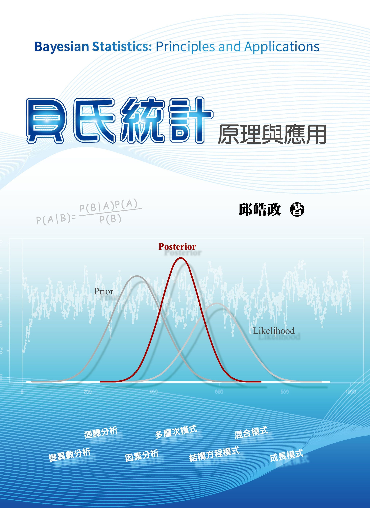
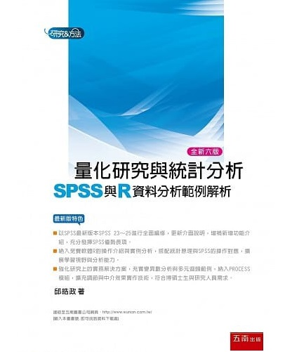
2019
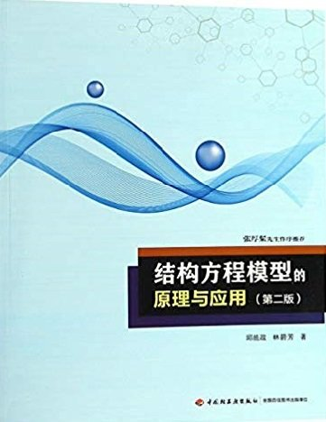
结构方程模型的原理与应用
2019
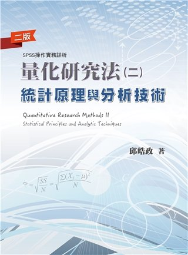
量化研究法（二）：統計原理與分析技術
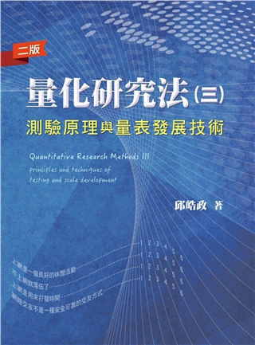
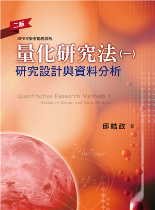
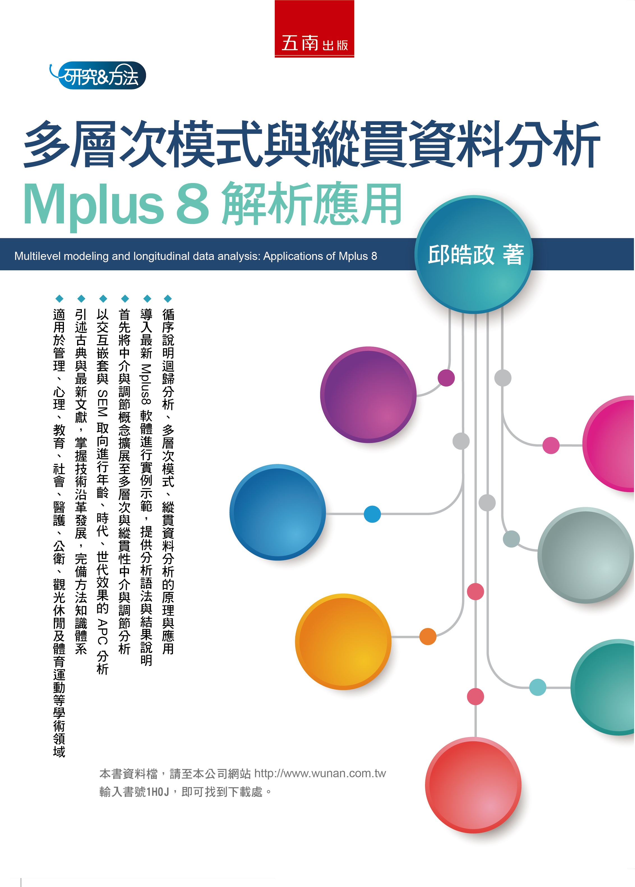
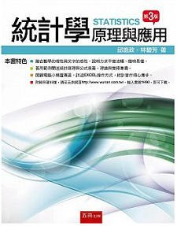
2014
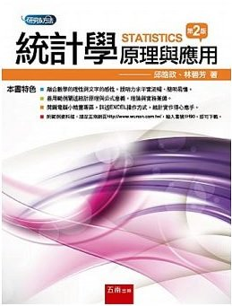
統計學：原理與應用
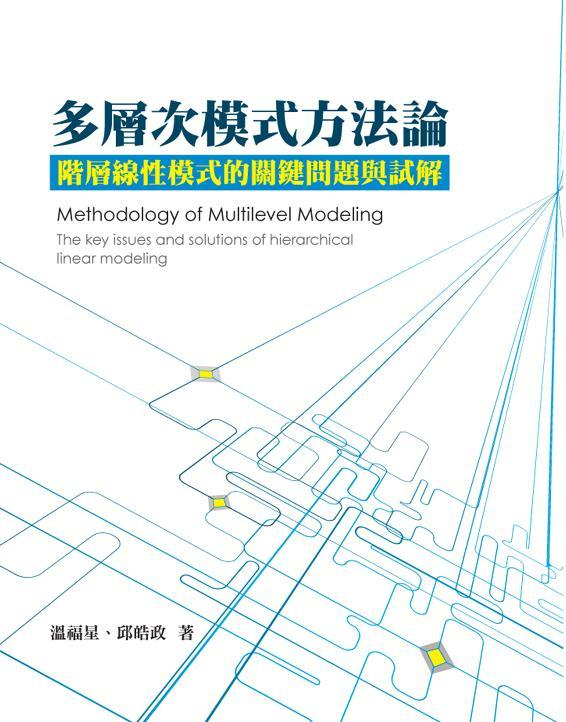
2012
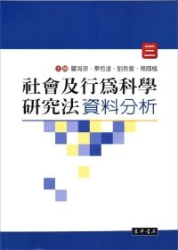
社會及行為科學研究法（三）：資料分析
2012
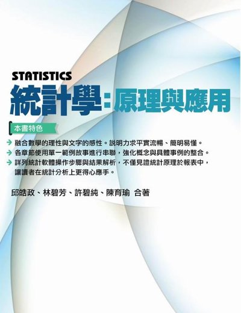
統計學：原理與應用
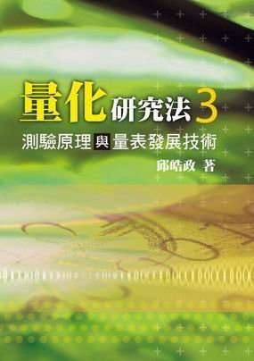
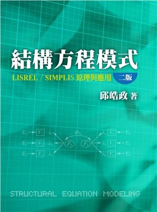
2011
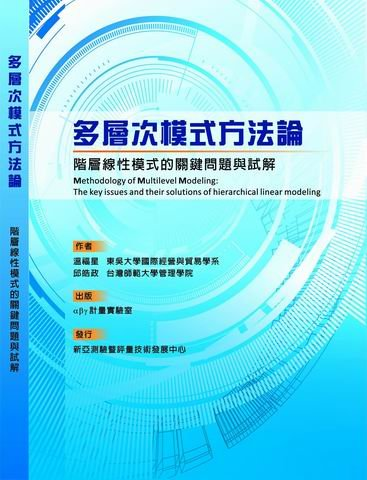
多層次模式方法論：階層線性模式的關鍵問題與試解
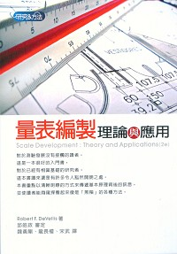
2010
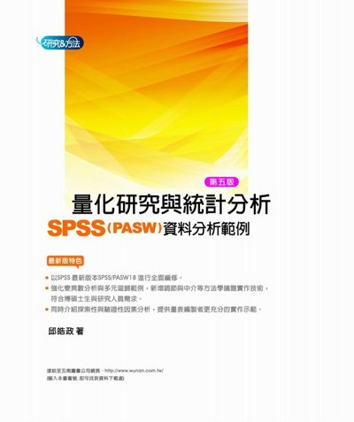
量化研究與統計分析：SPSS／PASW 中文視窗版資料分析範例解析
2009
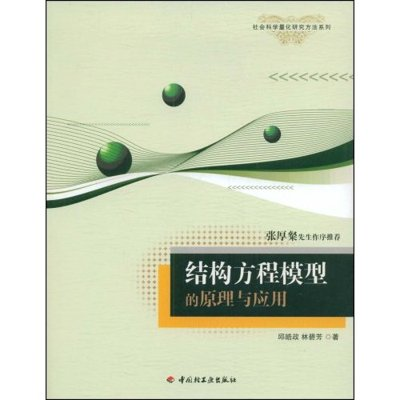
结构方程模式的原理与应用
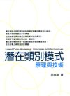
2008
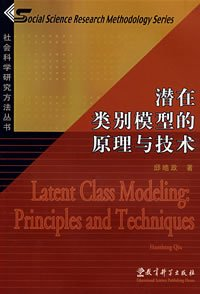
潜在类别模型的原理与技术
2008
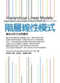
階層線性模式
2008
創造力：當代理論與議題
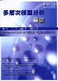
2007
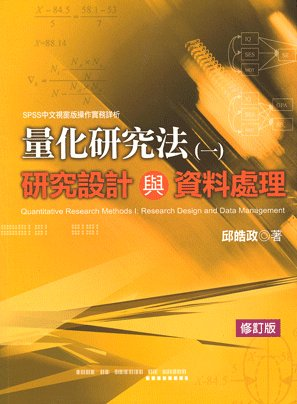
量化研究法（一）：研究設計與資料處理
2007
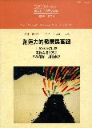
創造力的發展與實踐
2007
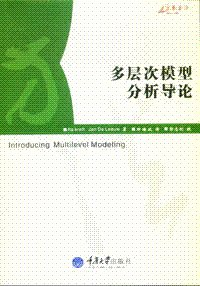
多层次模型分析导论
2007
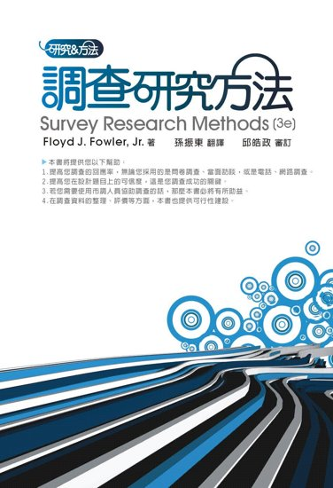
調查研究方法
2006
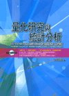
量化研究與統計分析：SPSS 中文視窗版資料分析範例解析
2006
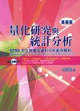
量化研究與統計分析：SPSS 中文視窗版資料分析範例解析
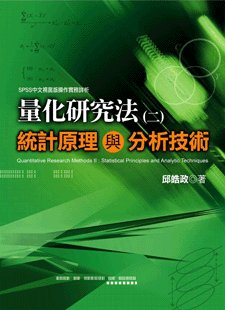
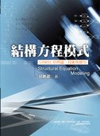
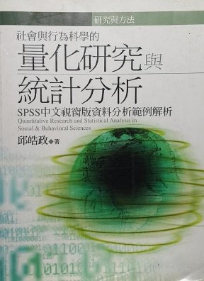
沒有符合的書目，請更換關鍵字或選擇「全部」。
書目依出版年由新到舊排列。舊站的不同版本、譯本與專題一併列出；重印與早期書頁另作標註。來源：原網站專書清單（另開分頁）、各出版社產品頁。資料核對：2026-10-02。
Book resources
專書配套資源
對照手邊書籍的版本，再下載所需範例。
RAR · BOOK MATERIALS
潛在異質性分析｜範例資料
搭配書中的 Mplus 潛在類別、剖面與轉移分析範例。
下載配套資料（RAR）（另開分頁）RAR · BOOK MATERIALS
統計學精華版｜範例資料
統計學精華版章節練習與分析用資料。
下載配套資料（RAR）（另開分頁）RAR · BOOK MATERIALS
統計學第四版｜範例資料
搭配第四版統計原理與 Excel 實作。
下載配套資料（RAR）（另開分頁）ZIP · BOOK MATERIALS
量化研究與統計分析第六版｜範例資料
SPSS 與 R 資料分析範例解析的配套資料。
下載配套資料（ZIP）（另開分頁）RAR · BOOK MATERIALS
多層次模式與縱貫資料分析｜範例資料
Mplus 8 多層次與縱貫分析章節範例。
下載配套資料（RAR）（另開分頁）RAR · BOOK MATERIALS
貝氏統計｜分析語法
Mplus 與 R 的貝氏分析配套語法。
下載配套資料（RAR）（另開分頁）ZIP · BOOK MATERIALS
量化研究法（一）｜範例資料
研究設計與資料分析的配套範例資料。
下載配套資料（ZIP）（另開分頁）RAR · BOOK MATERIALS
量化研究法（三）｜分析語法與資料
測驗原理與量表發展的分析語法與資料檔。
下載配套資料（RAR）（另開分頁）ZIP · BOOK MATERIALS
量化研究法（二）｜範例資料
統計原理與分析技術增修版的配套範例資料。
下載配套資料（ZIP）（另開分頁）外部教材與配套檔案由原網站或出版社提供；使用範例時，請依書籍說明核對軟體與版本。